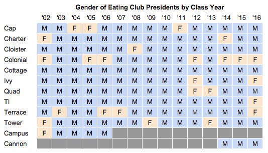
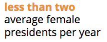
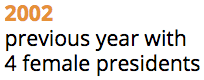
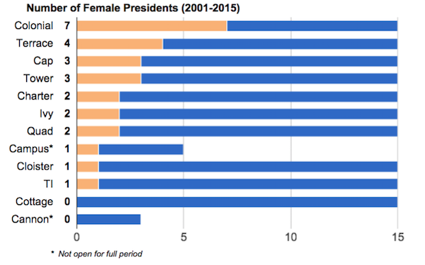
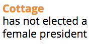

Eating clubs play a pivotal role in Princeton’s social scene. As with any system -- especially one with so much influence -- it’s imperative that the diversity of our clubs and campus is reflected in our leaders.
Recently, TI elected its first-ever female president, and Ivy its second. This seems historic, but hard to contextualize -- how does this compare to other clubs and past years?
After a bit of digging,[1] I collected the names and genders of the Presidents from the past 15 years. The full list is here. Here’s what the spread looks like:

Surprise! Presidency is male-dominated. Only 16% of presidents have been women in the last fifteen years. That’s an average of 1.7 female presidents per year. With 10 or 11 clubs around every year during this period, having less than 2 female presidents per year on average is embarrassing.

It gets worse: eight of the past fifteen years, the Street has had either 0 or 1 female presidents. Last year -- 2014 -- was one of them.
On a positive note, I was surprised to find that this isn’t the first time we’ve had 4 out of 11 female presidents: 2002 already accomplished it! Meanwhile, the five years in the middle (2006-2010) were the worst in terms of gender representation. 2009 was the only year of the past fifteen with all male presidents.

With such fluctuation, one should be wary saying this year shows lasting progress. The past five years were the best five-year period (12 women), but the second-best period was 10 years ago (10 women), right before it dropped. There’s nothing to prevent leadership from dropping in representation over the next few years, too.
Next, let’s take a look by club:

Colonial kills the game. With 7 female and 8 male presidents, they’ve got an even split. After being the first club to admit women in 1969, Colonial clearly paves the way for gender representation.[2] Catch up, rest of the Street!
Most other clubs trail with 1-3 presidents over this period. Now that TI has elected a female President, only Cottage has failed to elect a female President[3]. (Cannon’s hard to compare since it’s only been around for part of the period, so it’s off the hook -- for now.)

It’s important to note that every single club has had a streak of at least five years without a female president. During one of those times, a student can visit the club every year she/he is on campus and never see a female President there.
Of course, eating club leadership extends beyond the President. The Steering Committee Report on Women’s Leadership in 2001 noted that women tended to choose leadership positions “behind the scenes” -- avoiding high-visibility positions like presidency.
Susannah Sharpless ‘15 counted last year in an illuminating article and said that, while only one president was female, women represent a third of officers in general. Likely, it would be revealing to look at representation across position. There are strong lingering stereotypes for certain positions, such as clubs electing females as secretary or males for security-related roles. Beyond that, we should strive to obtain all realms of diversity -- racially, socio-economically, and beyond the gender binary as well. These are a lot harder to measure, but it’s obvious that we have work to do there.
Regardless, having four female presidents and the first female president in TI is a moment to celebrate. This certainly couldn’t have happened 25 years ago. Let’s move forward on this by being receptive to female leaders, encouraging women to run, and voting for qualified candidates regardless of gender. Consider what you believe to be a ‘presidential’ figure and make sure it doesn’t include gendered qualities.
It’s on all of us to sustain this change and not make it a temporary trend. In the meantime, we’re waiting on you, Cottage.
[1] The names/genders of Presidents from 2001-2010 were collected by the Steering Committee on Undergraduate Women’s Leadership. The names/genders of Presidents from 2011-2015 were collected using Daily Princetonian articles on eating clubs or through connections in clubs. Gender was assigned using pronouns from the articles, listed gender on Facebook, or knowledge of the person.
[2] Source. Colonial also killed it last year, when they had more women in their “Top Five” than men -- the only club that could make a statement like that..
[3] In 2011, the Prince reported that only TI and Cottage had not elected female presidents (not including Cannon).
Thanks to Azza Cohen '16 for reading over a draft of this post!
© Feb 2015